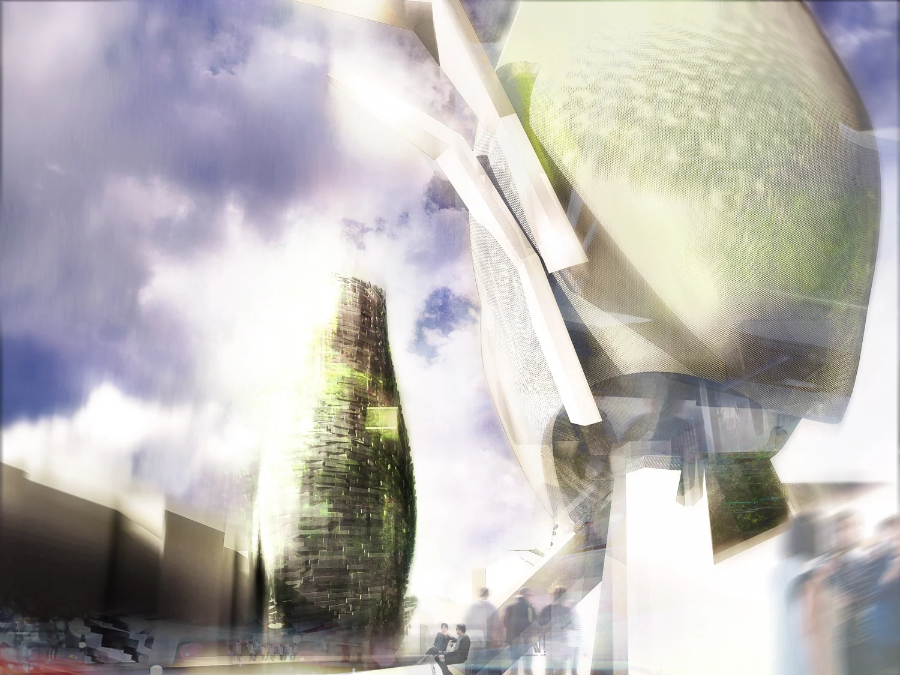
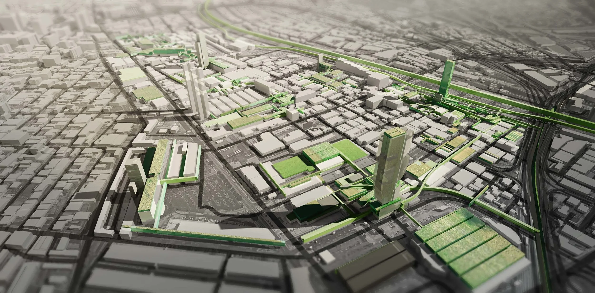

The global food system is ripe for disruption. Agriculture is the world's second-largest carbon emitter, after the energy sector. The heavy footprint of soil-based farming accounts for 80% of tropical deforestation, is the primary cause of oxygen-depleted dead zones in coastal regions, is the largest freshwater consumer (using 80% of California's limited supply), is the largest culprit of nitrous oxide (a GHG with 300 times the heat-trapping power of CO2) and is hyper-dependent on emissions-heavy transportation like trucks and planes — with the average American meal traveling about 1,500 miles from farm to plate. Because of transit damage and having a short shelf life in retail stores upon arrival, more than 40% of food is wasted. Furthermore, food is highly climate-sensitive, with poor safeguards against the unpredictable future of Earth's temperature and fresh water supply. Organizationally, it is middleman-heavy and labor-intensive, driving up costs to consumers. High produce prices drive consumers to less healthy choices causing major health consequences nationwide.

The predicted world population of 9 billion people in 2050 will affect the amount of sufficient resources to produce enough food for everyone. An alternative to traditional agriculture is needed as population growth in urban areas is outpacing and decreasing agricultural land availability. In the event of catastrophic climate change or any natural/man-made catastrophe, investing in hydroponics functions as humankind's insurance policy. A diversity of agricultural technologies decouples human success from the environment and sets up proactive resilience measures in the event of catastrophe.
Four different schemes regarding Social Service, Educational Outreach, Economic Development, and Cultural Branding are implemented on pilot sites which include a public school, a commercial-driven district, a church, and an industrial warehouse to generate build-and-deploy strategies that will impact on five levels:
(1) on-site, to have an economic impact on groceries or can function as a supplementary income stream;
(2) in the community, to have a public health and education impact by teaching urban agriculture and providing quality produce in areas with limited access to fresh food;
(3) in the city, to remove emissions-heavy delivery trucks from the road;
(4) nationally, to help restore the environment since hydroponic systems use 95% less water (especially crucial in the West), no pesticides, no energy (in combination with rooftop solar), and virtually no land;
(5) globally, to eliminate transportation and storage-related carbon dioxide. The various strategic initiatives will test production, distribution, and utility to address global issues in food access and climate change.
I. Social Service + Food Equity — Transcendent Campus
Team: Baocheng Yang, Luyan Shen, Jihun Son, Sara Jafarpour
II. Educational Outreach — Urban Canopy
Team: John Paul Salcido, Kevin Sherrod, Ran Israeli
III. Economic Development — Agri-Industrialism
Team: Deborah Liu, Niloufar Golkar, Yake Wang
Distribution problems regarding spoilage and costs continue to increase when farms are further away from the metropolis. Furthermore, due to rapid urban expansion, cities now heavily rely on fragile food supply chains. Folding the farm back into the city to alleviate the issue of distribution is proposed through the following 4 strategies: Analyze found conditions; Occupy found conditions; Reactivate environment and land value; Transform economy. Using the rapidly growing developments in Downtown Los Angeles' Arts District as a catalyst for hydroponics forms a new way of looking at Arts Districts and strengthens the relationship between agriculture and city resiliency.
IV. Cultural Branding — Branding Farming
Team: Barak Kazenelenbogen, Dunia Abu Shanab, Pegah Koulaeian
V. Making Healthy Food Accessible — Farm Box

